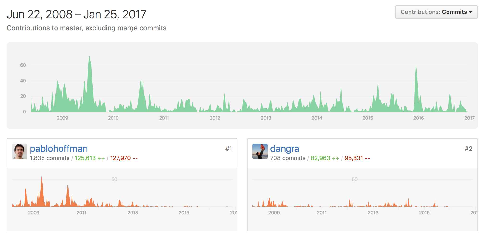

Scrapy

把網站裝進爬蟲裡，總共分幾步？ 答案很簡單，四步：
- 新建項目 (Project)：新建一個新的爬蟲項目
- 明確目標（Items）：明確你想要抓取的目標
- 製作爬蟲（Spider）：製作爬蟲開始爬取網頁
- 存儲內容（Pipeline）：設計管道存儲爬取內容
- crapy.cfg：工程的配置文件
- scrapy_test：工程的Python文件目錄
- scrapy_test/items.py：項目的items文件, 我們需要在此文件中定義需要從網頁中獲取的內容,對應上面說的步驟2
- scrapy_test/pipelines.py：項目的pipelines文件, 用於保存處理爬取到的內容, 對應於步驟4
- scrapy_test/settings.py：項目的設置文件
- scrapy_test/spiders/：存儲爬蟲的目錄, 對應步驟3
通過urllib 獲取網頁的html 代碼，然後利用BeautifulSoup 或lxml 等xml parser解析出我們需要的內容。
Python爬虫框架Scrapy实战之定向批量获取 -CSDN.NET
用scrapy.spider.BaseSpider創建一個子類，並確定三個強制的屬性：
- name：爬蟲的識別名稱，必須是唯一的，在不同的爬蟲中你必須定義不同的名字。
- start_urls：爬取的URL列表。爬蟲從這裡開始抓取數據，所以，第一次下載的數據將會從這些urls開始。其他子URL將會從這些起始URL中繼承性生成。
- parse()：解析的方法，調用的時候傳入從每一個URL傳回的Response對象作為唯一參數，負責解析並匹配抓取的數據(解析為item)，跟蹤更多的URL。
延伸閱讀